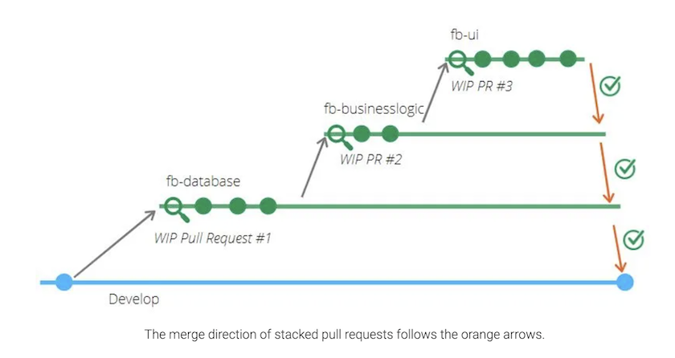

Difficult to keep track of dependant pull requests
Stacked PRs
It’s a paradigm for working with a bunch of pull requests that depend on each other
Read this: https://www.michaelagreiler.com/stacked-pull-requests/

There’s some difficulties with doing this on Centah right now:
Looking for a tool to help with all these issues. Found two:
Ended up picking git-spr because Graphite.dev is paid, GUI, and I’m not sure if it will work with my flow.
README walkthrough…